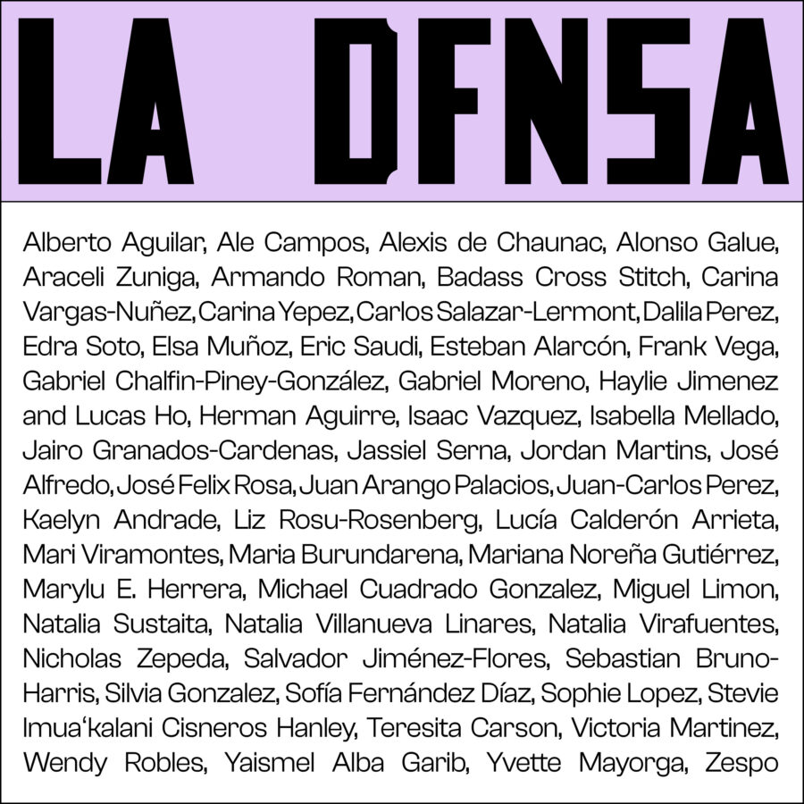

LA DFNSA Art Fundraiser
EXTENDED–Fundraiser Closes Feb 9!
LA DFNSA: Latine Artists Defending Families, Neighbors, & Safe Asylum
An Online Art Fundraiser Supporting The Midwest Immigration Bond Fund (MIBF)
Purchase available works and view catalogue at chuquimarca.com/ladfnsa
100% of proceeds from LA DFNSA will directly go to MIBF! —
Continuing Chicago’s deep history of community and civic care, La DFNSA brings Latine artists and friends together to turn grief into action and fear into connection.
Through prints, drawings, and photographs reflecting these artists’ inspirations and concerns, this fundraiser is not just a response to harm, but an affirmation of everything that sustains migrant and Latine communities: love, creativity, courage, and collective care.
MIBF is a nonprofit organization paying immigration bonds that release people from detention and reunite them with their families, neighbors, and communities. Learn more about MIBF on there website: www.mibfc.org